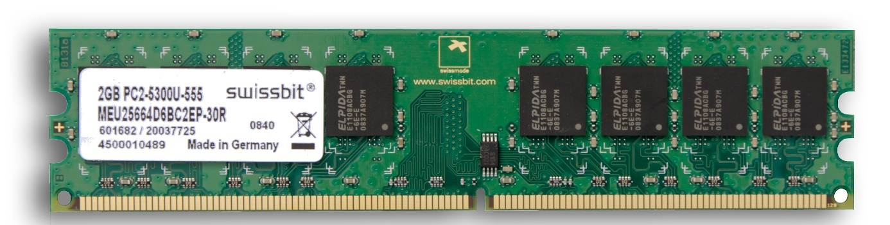

Bij DDR II SDRAM wordt een verdubbeling van de troughput verkregen door opnieuw de prefetch buffer te vergroten. Deze is nu 4.
Ook hier kan je twee dingen afleiden vanuit de figuur: de datatransfersnelheid is 5300MB/s en de capaciteit is 2 GB.
